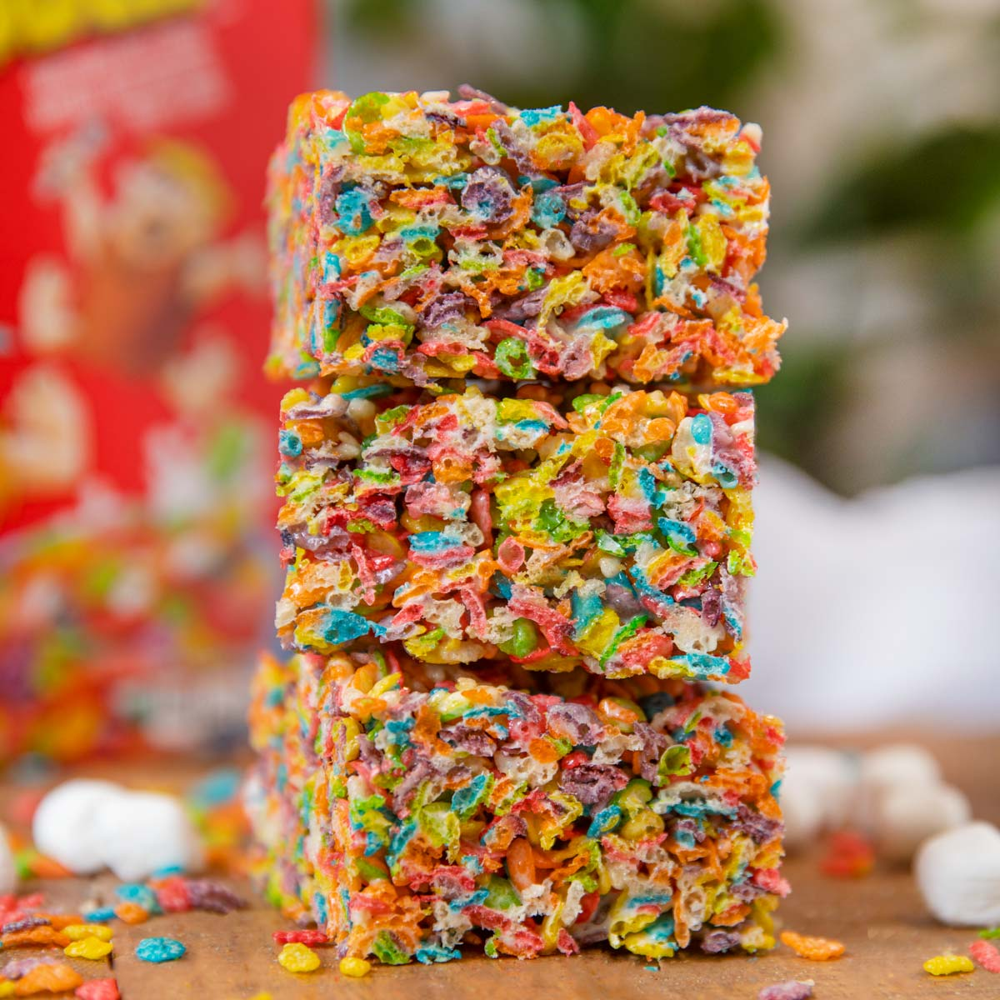

Fruity Pebble Treats

Fruity Pebble Treats: Fun and Delicious!
A little fancier than Rice Krispie Treats, Fruity Pebble Treats adds a little extra fun to a
family favorite snack. Just melt some butter, add a bag of marshmallows, and dump a box of
Fruity Pebbles in the mix! Or, heck, try any cereal you like.
Ingredients I Guessed At
- 1 Cup of Butter (melted)
- 1 Bag of Marshmallows
- 1 Box of Fruity Pebbles
Fruity Pebbles Treat Recipe
- Melt a stick of butter in a pan over medium.
- As the butter melts, slowly add marshmallows.
- Stir until it's a smooth marshmallow fluff.
- Slowly work in the Fruity Pebbles until integrated.
- Press the mass into the shape of the baking tray.
- Wait for it to cool, and cut into squares to serve!